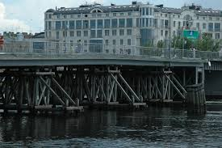

С востока на запад (по увеличению нумерации домов) к набережной Мартынова примыкают следующие улицы:
- Прожекторная улица — с переходом набережной Мартынова в Константиновский проспект;
- Депутатская улица — с нечётной стороны;
- Кемский переулок;
- Динамовская улица;
- Рюхина улица — в створе расположен 2-й Елагин мост;
- Набережная Гребного канала и Бодров переулок.
Набережная существует с конца XIX века. Изначально проходила только до реки Чухонки (где сейчас начинается Гребной канал), после постройки Гребного канала набережная была продлена по берегу канала до Бычьего острова.